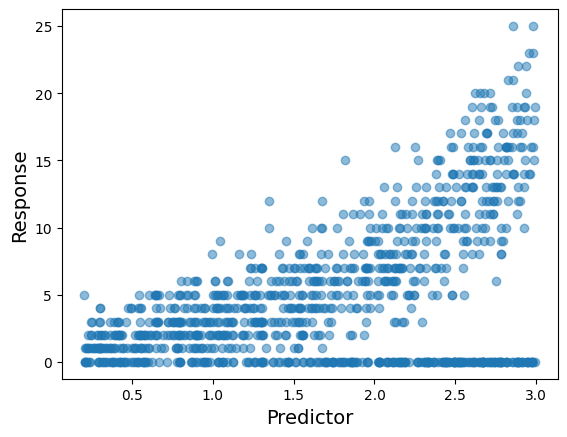

import arviz as az
import bambi as bmb
import matplotlib.pyplot as plt
import numpy as np
import pandas as pd
import pymc as pm
from bambi.plots import plot_cap
from matplotlib.lines import Line2D
from scipy.special import expitHow to create a custom family in Bambi?
Bambi is the project I dedicate the vast majority of my open-source development time. My goal is to make it a little better every time I push to the main branch. Lately I’ve been working to expand the class of models that Bambi supports. Until now, Bambi supported Generalized Linear Mixed Models (GLMMs). After the latest changes1 Bambi supports a wider class known as Generalized Linear Mixed Models for Location, Scale, and Shape. I also like the terminology used in brms, Distributional Models.
The new additions to the library allow us to work with more flexible custom model families in an easier way. The question is: How to create a custom family in Bambi?
Imports
The Zero-Inflated Poisson distribution
I’m going to use the Zero-Inflated Poisson distribution to demonstrate how to add a custom family in Bambi. This distribution applies to random variables that show an excess of zeros when describing the number of events that occur in a certain space or time period.
Quoting Wikipedia 2 “The zero-inflated Poisson (ZIP) model mixes two zero generating processes. The first process generates zeros. The second process is governed by a Poisson distribution that generates counts, some of which may be zero”. The result is a mixture distribution that can be described as follows:
\[ \begin{array}{ll} P(Y = 0) = (1 - \psi) + \psi e^{-\mu} \\ P(Y = y_i) = \displaystyle \psi \frac{e^{-\mu}\mu^y_i}{y_i!} & \text{if } y_i=1,2,3,\ldots \end{array} \]
Where
- \(y_i\) is the outcome, a non-negative integer
- \(\mu\) is the mean of the Poisson process, \(\mu \ge 0\)
- \(\psi\) is the probability of the Poisson process, \(0 < \psi < 1\)
The mean is \(\psi\mu\) and the variance is \(\displaystyle \mu + \frac{1-\psi}{\psi}\mu^2\).
The ZIP Regression model
We have a response variable \(Y\), which represents a count in a given space or time, and \(p\) predictors \(X_1, \cdots, X_p\). In the most general formulation of the model we consider, a function of the parameters in the response distribution is given by a linear combination of the predictors.
\[ \begin{aligned} Y_i &\sim \text{ZIPoisson}(\mu_i, \psi_i) \\ g(\mu_i) &= \beta_0 + \beta_1 X_{1i} + ... + \beta_p X_{pi}\\ h(\psi_i) &= \alpha_0 + \alpha_1 X_{1i} + ... + \alpha_p X_{pi} \end{aligned} \]
- \(g\) is the link function for the \(\mu\) parameter
- \(h\) is the link function for the \(\psi\) parameter
It’s possible to see this model written as
\[ \begin{aligned} Y_i &\sim \text{ZIPoisson}(\mu_i, \psi_i) \\ \mu_i &= g^{-1}(\beta_0 + \beta_1 X_{1i} + ...) \\ \psi_i &= h^{-1}(\alpha_0 + \alpha_1 X_{1i} + ...) \end{aligned} \]
where the requirement that \(g\) and \(h\) are both invertible is evident.
The simplest case
We start simulating observations from a zero-inflated Poisson distribution using plain NumPy.
Simulate the data
rng = np.random.default_rng(121195)
x = np.concatenate([np.zeros(250), rng.poisson(lam=3, size=750)])
df = pd.DataFrame({"response": x})values, counts = np.unique(x, return_counts=True)
fig, ax = plt.subplots()
ax.bar(values, counts)
ax.set(xlabel="Response", ylabel="Count", xticks=values);
Create the ZeroInflatedPoisson Family
- The name of the
Likelihoodmust be the name of a valid PyMC distribution3. paramsmust be the names of the parameters in the corresponding PyMC distribution."log"ang"logit"are built-in link functions so we can use their names and Bambi will handle the details. If we want a custom link function, we need to create abmb.Linkobject manually.
likelihood = bmb.Likelihood("ZeroInflatedPoisson", params=["mu", "psi"], parent="mu")
links = {"mu": "log", "psi": "logit"}
zip_family = bmb.Family("zero-inflated-poisson", likelihood, links)
zip_familyFamily: zero-inflated-poisson
Likelihood: Likelihood(
name: ZeroInflatedPoisson,
params: ['mu', 'psi'],
parent: mu
)
Link: {'mu': Link(
name: log,
link: <ufunc 'log'>,
linkinv: <ufunc 'exp'>
), 'psi': Link(
name: logit,
link: <function logit at 0x7f2dd0e6b880>,
linkinv: <function expit at 0x7f2dd0e6b7f0>
)}Build and fit the model
priors = {"psi": bmb.Prior("Beta", alpha=3, beta=3)}
model = bmb.Model("response ~ 1", df, family=zip_family, priors=priors)
model Formula: response ~ 1
Family: zero-inflated-poisson
Link: mu = log
Observations: 1000
Priors:
target = mu
Common-level effects
Intercept ~ Normal(mu: 0.0, sigma: 2.5)
Auxiliary parameters
response_psi ~ Beta(alpha: 3.0, beta: 3.0)model.build()
model.graph()
idata = model.fit()Auto-assigning NUTS sampler...
Initializing NUTS using jitter+adapt_diag...
Multiprocess sampling (2 chains in 2 jobs)
NUTS: [response_psi, Intercept]
100.00% [4000/4000 00:04<00:00 Sampling 2 chains, 0 divergences]
Sampling 2 chains for 1_000 tune and 1_000 draw iterations (2_000 + 2_000 draws total) took 4 seconds.Does the fit make sense?
model.predict(idata, kind="pps")
az.plot_ppc(idata);
A second example, now with a predictor
Both \(\mu\) and \(\psi\) change with the predictor.
Simulate the data
rng = np.random.default_rng(121195)
x = np.sort(rng.uniform(0.2, 3, size=500))
b0, b1 = 0.1, 0.9
a0, a1 = 2.5, -0.7
mu = np.exp(b0 + b1 * x)
psi = expit(a0 + a1 * x)
y = pm.draw(pm.ZeroInflatedPoisson.dist(mu=mu, psi=psi))
df = pd.DataFrame({"y": y, "x": x})

Build and fit the model (again)
Notice we don’t need to create the family again. It’s already there!
formula = bmb.Formula("y ~ x", "psi ~ x")
model = bmb.Model(formula, df, family=zip_family)
model Formula: y ~ x
psi ~ x
Family: zero-inflated-poisson
Link: mu = log
psi = logit
Observations: 500
Priors:
target = mu
Common-level effects
Intercept ~ Normal(mu: 0.0, sigma: 5.7833)
x ~ Normal(mu: 0.0, sigma: 3.1083)
target = psi
Common-level effects
psi_Intercept ~ Normal(mu: 0.0, sigma: 1.0)
psi_x ~ Normal(mu: 0.0, sigma: 1.0)model.build()
model.graph()
idata = model.fit(random_seed=121195)Auto-assigning NUTS sampler...
Initializing NUTS using jitter+adapt_diag...
Multiprocess sampling (2 chains in 2 jobs)
NUTS: [Intercept, x, psi_Intercept, psi_x]
100.00% [4000/4000 00:08<00:00 Sampling 2 chains, 0 divergences]
Sampling 2 chains for 1_000 tune and 1_000 draw iterations (2_000 + 2_000 draws total) took 9 seconds.Evaluate the inference
fig, axes = plt.subplots(2, 2, figsize=(9, 7), layout="constrained")
az.plot_posterior(
idata,
var_names=["Intercept", "x", "psi_Intercept", "psi_x"],
ref_val=[0, 0.9, 2.5, -0.7],
ax=axes
);
Show-off Bambi a little more
fig, axes = plt.subplots(1, 2, figsize=(12, 5))
plot_cap(model, idata, "x", ax=axes[0])
plot_cap(model, idata, "x", target="psi", ax=axes[1])
axes[0].plot(x, mu, color="black", ls="--")
axes[1].plot(x, psi, color="black", ls="--")
axes[0].set_xlabel("Predictor", size=14)
axes[1].set_xlabel("Predictor", size=14)
axes[0].set_ylabel("$\\mu$", size=14)
axes[1].set_ylabel("$\\psi$", size=14)
handles = [Line2D([], [], color="black", ls="--"), Line2D([], [], color="C0")]
labels = ("True", "Estimate")
axes[0].legend(handles, labels, loc="upper left")
axes[1].legend(handles, labels, loc="upper right");
Conclusions
- Compute the posterior distribution of parameters of the response distribution using in-sample or out-of-sample data.
- Compute the posterior predictive distribution for in-sample or out-of-sample data.
- Out of the box visualizations to evaluate model fit.
- No need to write any PyMC code or low-level code.
TL;DR
If you want a custom family you need
- Create a Likelihood object
- Define one or more link functions
- Use them to instantiate a Family object
likelihood = bmb.Likelihood("ZeroInflatedPoisson", params=["mu", "psi"], parent="mu")
links = {"mu": "log", "psi": "logit"}
zip_family = bmb.Family("zero-inflated-poisson", likelihood, links)Footnotes
https://en.wikipedia.org/wiki/Zero-inflated_model#Zero-inflated_Poisson↩︎
Custom likelihood functions are also possible but we don’t cover them here↩︎